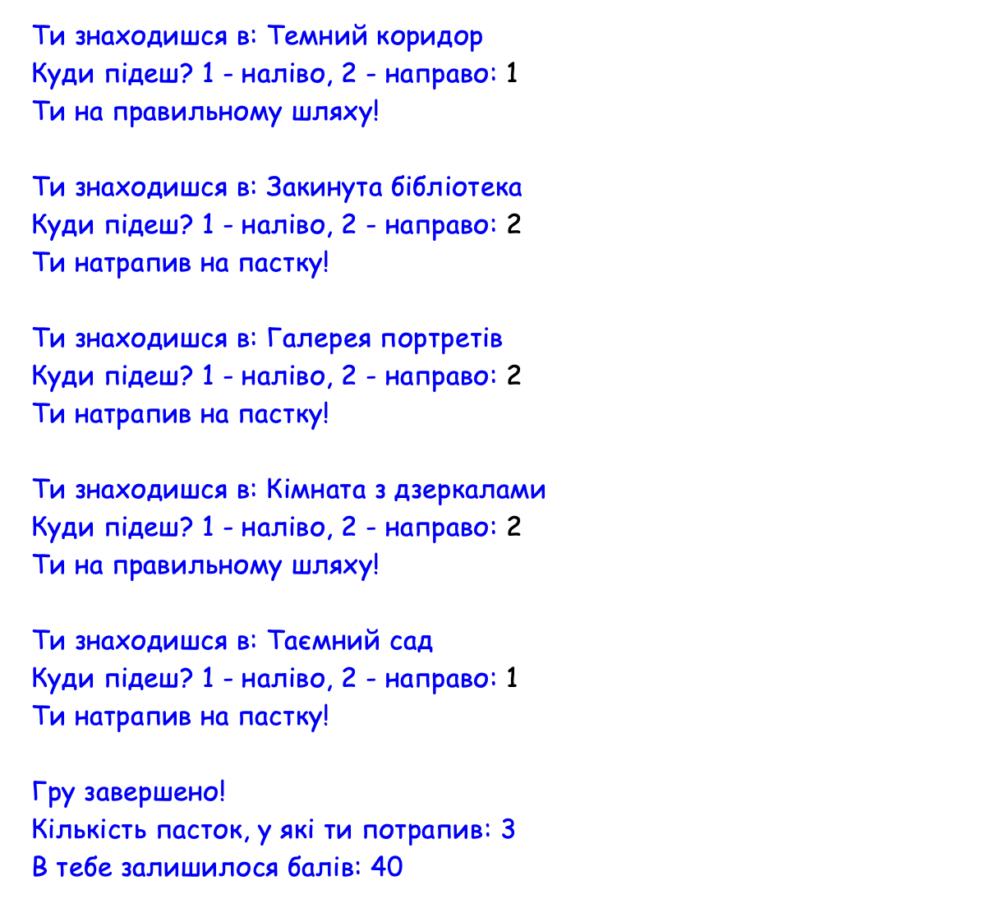

Що таке список та індекси
Що таке список та індекси
▶
Списки
Раніше ми зберігали в одній змінній лише одне значення, наприклад, одне число або рядок тексту. Але що як потрібно зберегти одразу 10 чисел? Для цього існують списки (lists).
Список — це впорядкована колекція даних. Щоб створити список, потрібно використати квадратні дужки [], а елементи всередині списку розділити комами.
# Список чисел
numbers = [10, 5, -2, 42]
print(numbers)
# Список рядків
colors = ["red", "green", "blue"]
print(colors)
# Змішаний
mix = ["red", 5, True, 3.14]
print(mix)Списки можуть містити будь-який тип даних: числа, рядки, логічні значення True/False, або навіть комбінацію із різних типів.
Індекси
Щоб дістати зі списку конкретне значення, використовують індекси — порядкові номери елементів.
❗️ Важливе правило: в програмуванні відлік завжди починається з нуля!
Тобто у списку colors = ["red", "green", "blue"]:
- "red" має індекс 0
- "green" має індекс 1
- "blue" має індекс 2
Щоб отримати елемент списку за його індексом, знову використовуємо []:
colors = ["red", "green", "blue"]
print(colors[0]) # Виведе "red"
print(colors[2]) # Виведе "blue"Перевір себе
❓ Питання 1: Що не так з цим кодом?
❓ Питання 2: Що виведе цей код (після того, як виправити помилки)?
books = [
"І не лишилось жодного"
"Таємнича пригода в Стайлзі"
"Вбивство у Східному експресі"
]
print(books[1])
 Практика 1
Практика 1
▶
Завдання
Завдання 1: Кольори
Створи список colors, який містить назви 4-х кольорів (англійською мовою).
- Виведи на екран весь список.
- Виведи окремо перший колір зі списку.
- Виведи окремо третій колір.
Завдання 2: Словник англійських слів
Створи список words, який містить англійські слова, якими можна описати настрій (мінімум три).
Напиши програму, яка генерує випадковий індекс за допомогою random.randint(a, b), знаходить в списку слово з цим індексом, і виводить повідомлення:
"Слово дня: [обране слово зі списку]"
Завдання 3: Сума
Створи список numbers з числами: 5, 8, -4, 0 та 3.
З допомогою індексів порахуй і виведи суму 1-го, 2-го та останнього чисел.
Завдання 4: Інвентар детектива
У детектива є список речей у валізі:
inventory = ["magnifying glass", "notebook", "hat", "map"]Напиши програму, яка запитує: "Яку річ дістати? (введи номер від 0 до 3): ".
- Якщо користувач вводить число більше ніж 3 або менше ніж 0 — програма виводить "Такої речі немає" (використай if/else та логічний оператор or).
- Інакше — програма виводить обрану зі списку річ.
Зміна елементів, додавання та видалення
▶
Довжина списку (len)
Щоб дізнатися, скільки елементів знаходиться у списку, використовують функцію len() (від англ. length — довжина). Вона повертає ціле число.
colors = ["red", "green", "blue"]
length = len(colors)
print("Кількість кольорів:", length) # Виведе 3Зміна існуючого елемента
Списки можна змінювати. Якщо потрібно замінити якийсь елемент, достатньо звернутися до нього за індексом і присвоїти нове значення за допомогою знака =.
colors = ["red", "green", "blue"]
colors[1] = "yellow" # Замінюємо "green" (індекс 1) на "yellow"
print(colors) # Виведе ['red', 'yellow', 'blue']Додавання та видалення (append, remove)
Для роботи зі списками існують спеціальні команди, які називаються методами списків. Вони пишуться через крапку після назви змінної списку:
- .append(значення) — додає новий елемент в кінець списку.
- .remove(значення) — шукає елемент за значенням і видаляє його зі списку (якщо таких елементів кілька, видалиться лише перший знайдений).
inventory = ["map", "flashlight"]
# Додаємо новий предмет
inventory.append("notebook")
print(inventory) # ['map', 'flashlight', 'notebook']
# Видаляємо предмет
inventory.remove("map")
print(inventory) # ['flashlight', 'notebook']❗️ Зверни увагу: Методи списків змінюють оригінальний список одразу, тому не потрібно писати inventory = inventory.append(...).
Перевір себе
❓ Питання: Що виведе цей код?
nums = [10, 20]
nums.append(30)
nums.remove(10)
nums[0] = 100
print(nums)
print(len(nums))
Практика 2
▶
Завдання
Завдання 1: Оновлення палітри
Створи програму для роботи з палітрою художника:
- Створи список colors із трьох кольорів: "red", "blue", "yellow".
- З допомогою індексу заміни "yellow" на "green".
- Додай в кінець списку "purple" з допомогою методу списку.
- Виведи фінальний список на екран.
Завдання 2: Список підозрюваних
Списки можна створювати порожніми, а потім заповнювати їх під час роботи програми.
- Створи порожній список: suspects = [].
- Використовуючи input(), запитай у користувача імена двох різних підозрюваних (по черзі) і додай їх у список за допомогою методу списку.
- Виведи на екран кількість підозрюваних, використовуючи len() (наприклад: "У справі 2 підозрюваних").
- Один з них виявився невинним. Запитай ім'я невинного через input() і видали його зі списку.
- Виведи фінальний список підозрюваних.
Завдання 3: Числа
Зі списками чисел також можна робити обчислення.
numbers = [10, 50, 100, 200]- Видали число 50 зі списку.
- Додай нове число 300 в кінець списку.
- Заміни перше число у списку на результат математичної операції: помнож його на 2.
- Виведи оновлений список та його довжину на екран.
Завдання 4: Замовлення в кафе
Уяви, що пишеш програму для планшета офіціанта. Відвідувач замовив піцу, сік та морозиво. Створи список order з відповідними елементами (англійською мовою).
Але відвідувач почав вагатися і змінювати думку. Онови список за допомогою методів списку та індексів:
- Видали морозиво.
- Додай торт.
- Заміни сік на чай.
- Виведи фінальний список замовлення на екран.
Списки та цикл for
▶
Обхід списку циклом for
Цикл for ідеально підходить для роботи зі списками. Замість того, щоб звертатися до кожного елемента за індексом окремо, ми можемо попросити цикл "пройтися" по всьому списку від початку до кінця.
colors = ["red", "yellow", "blue"]
# Читається так: "Для кожного кольору у списку кольорів..."
for color in colors:
print("Колір:", color)У цьому прикладі змінна color на кожному кроці циклу автоматично приймає значення наступного елемента зі списку.
Математика в списках
Цикл for часто використовують для обчислень. Наприклад, якщо дано список чисел, можна знайти їх суму. Для цього спершу перед циклом створюють змінну з початковим значенням 0, а тоді всередині циклу до неї по черзі додають кожен елемент:
numbers = [10, 20, 30]
total = 0
for num in numbers:
total += num
print(f"Сума = {total}")Умови всередині циклу
Ми можемо об'єднати цикл for та умову if/else. Це корисно, коли нам потрібно перевірити кожен елемент списку і виконати дію лише з певними даними (наприклад, знайти лише парні числа).
math_list = [5, -2, 8, -1, 4]
for num in math_list:
if num % 2 == 0:
print(num)Перевір себе
❓ Питання 1: Які дві помилки допущено в цьому коді?
❓ Питання 2: Що виведе цей код (якщо виправити помилки)?
nums = [1, 2, 3]
for n of nums
print(n * 10)
Практика 3
▶
Завдання
Завдання 1: Список покупок
Створи список shopping_list із 4-5 назвами продуктів (англійською мовою).
Використай цикл for, щоб пройтися по цьому списку, і для кожного продукту виведи повідомлення формату:
"Треба купити: [назва продукту]".
Завдання 2: Злом сейфа
Детектив знайшов сейф, на якому написаний список чисел-підказок: codes = [15, -8, 42, 11, -24, -5, 2].
Щоб відкрити сейф, потрібно знайти суму всіх додатніх чисел у цьому списку, а потім результат помножити на 2.
Порахуй і виведи код до сейфу, використавши цикл.
Завдання 3: Фільтр чисел
Дано список з різними числами: data = [15, 22, 7, 44, 90, 30, 1].
Напиши програму, яка через цикл перевіряє кожне число зі списку. Якщо число ділиться без остачі одночасно на 3 і на 5, програма виводить це число, інакше – ігнорує.
Завдання 4: Аналіз тексту
У нас є зашифроване повідомлення, розбите на слова:
message = ["The", "suspect", "is", "in", "London"]Напиши програму, яка за допомогою циклу for обходить цей список і для кожного слова виводить його довжину.
Наприклад: "Слово The має 3 літер/и".
Домашнє завдання
▶
Гра "Квест-кімната"
Сьогодні ти розробник текстової гри "Escape Room". Гравцю потрібно пройти 5 різних кімнат і спробувати зберегти максимум балів, не потрапивши у пастки.
Що потрібно зробити:
- Створити список rooms з назвами 5-ти кімнат. Наприклад: "Темний коридор", "Закинута бібліотека", "Галерея портретів", "Кімната з дзеркалами", "Таємний сад".
- Створити змінні для підрахунку: балів гравця (points, спочатку 100) та пасток, в які він потрапив (traps, спочатку 0).
-
Використати цикл щоб для кожної кімнати зі списку:
- Вивести повідомлення: "Ти знаходишся в: [назва кімнати]".
- Запитати в користувача: "Куди підеш? 1 - наліво, 2 - направо: ".
- Згенерувати правильну відповідь з random.randint.
-
Перевірити вибір гравця за допомогою
if/else:
- Якщо він вгадав — вивести "Ти на правильному шляху!".
- Якщо ні — вивести "Ти натрапив на пастку!", збільшити кількість пасток на 1 і зменшити бали на 20.
- Після завершення циклу вивести фінальні результати: повідомлення "Гру завершено!", кількість зібраних пасток та залишок балів.
